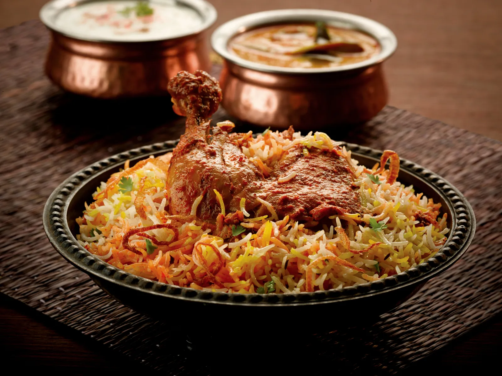

Chicken Biryani Recipe

Ingredients:
- 1 cup basmati rice
-
1 lb boneless, skinless chicken breast or thighs, cut into small pieces
- 2 medium onions, chopped
- 2 cloves garlic, minced
- 1 teaspoon grated ginger
- 1 teaspoon cumin seeds
- 1 teaspoon coriander seeds
- 1 teaspoon turmeric powder
- 1 teaspoon red chili powder
- 1 teaspoon garam masala powder
- Salt, to taste
- 2 tablespoons ghee or oil
- 2 cups water
- Fresh cilantro, for garnish
Instructions:
- Heat ghee or oil in a large pan over medium heat.
-
Add cumin seeds and coriander seeds and let them sizzle for a few
seconds.
-
Add chopped onions, minced garlic, and grated ginger. Saute until onions
are translucent.
-
Add chicken pieces and cook until they are browned and cooked through.
-
Add turmeric powder, red chili powder, and garam masala powder. Mix
well.
- Add 2 cups of water and bring to a boil.
- Drain the water from the rice and add it to the pan. Mix well.
-
Cover the pan with a tight-fitting lid and cook over low heat for 15-20
minutes or until the rice is cooked and fluffy.
- Garnish with fresh cilantro and serve hot.
Enjoy your delicious Chicken Biryani!
Return to Top
Go to Home